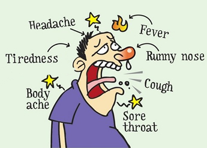

Flu(influenza)
Influenza, or flu, is a respiratory illness caused by a virus. Flu is highly contagious and is normally spread by the coughs and sneezes of an infected person. Although unpleasant, flu is rarely life threatening.
Page | 17
How Flu Spreads?

- Most experts believe that flu viruses spread mainly by tiny droplets made when people with flu cough, sneeze or talk.
- These droplets can land in the mouths or noses of people who are nearby.
- It is spread by droplets from a sneeze or cough, or by contact with the clothing, bed linens or oozing blisters of an infected person.
- Less often, a person might also get flu by touching a surface or object that has flu virus on it and then touching their own mouth, nose, or possibly their eyes.
What are the symptoms of Flu(influenza)?
Confusing flu with a bad cold is common. Flu and cold symptoms may both include a runny/blocked nose, sore throat, and cough.To help you tell them apart, below are some symptoms of flu that are different from a heavy cold:
- high temperature
- cold sweats and shivers
- headache
- aching joints and limbs
- fatigue, feeling exhausted
- There may also be gastrointestinal symptoms, such as nausea, vomiting, and diarrhea; these are much more common among children than adults.
Page | 18
What are the treatments for Flu?
- The first and most important step in preventing flu is to get a flu vaccination each year.
- Everyday preventive actions (like staying away from people who are sick, covering coughs and sneezes and frequent handwashing) to help slow the spread of germs that cause respiratory (nose, throat, and lungs) illnesses, like flu.
- There are influenza antiviral drugs that can be used to treat flu illness.